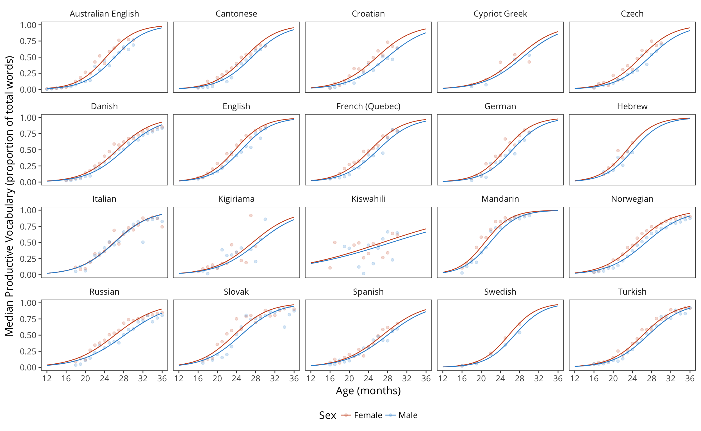
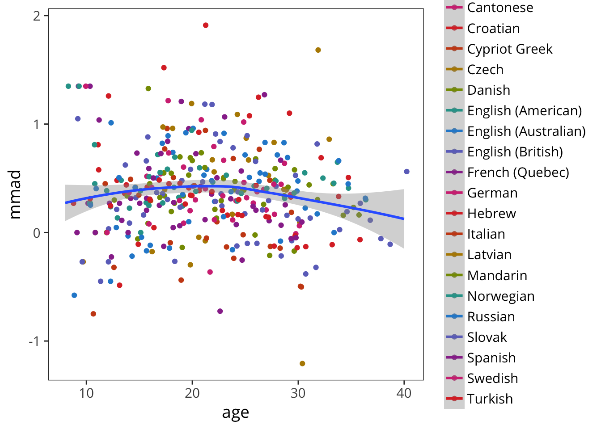
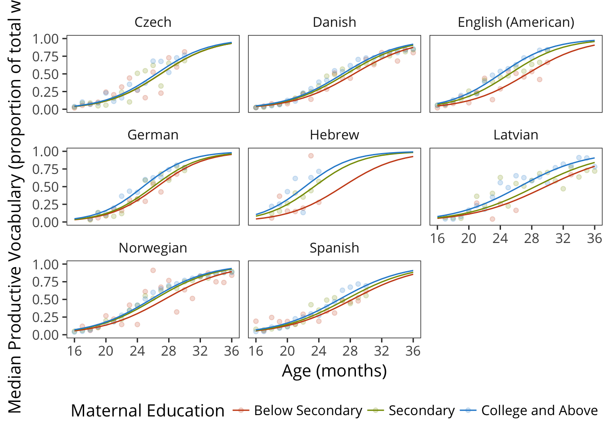
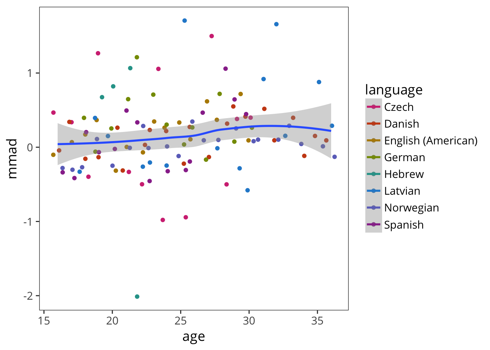
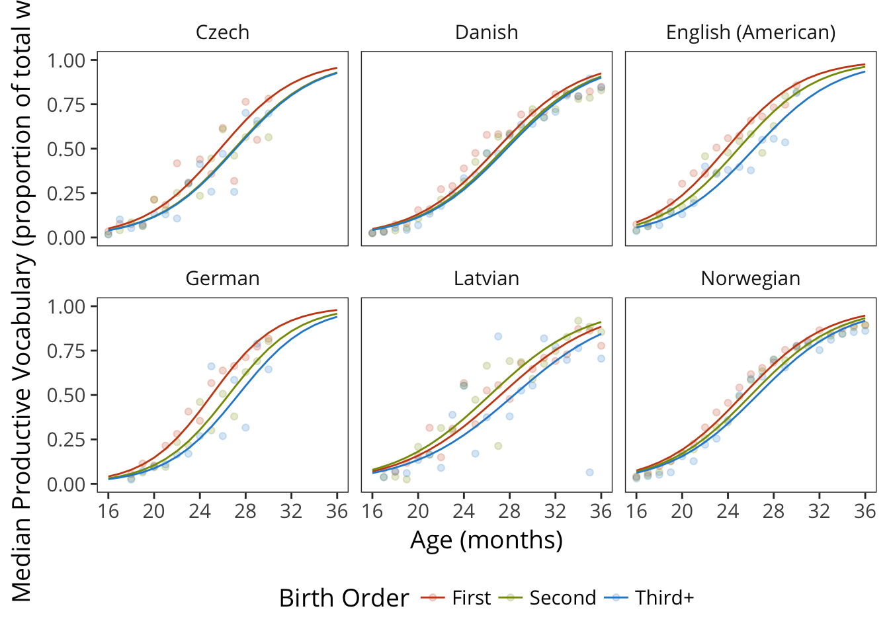
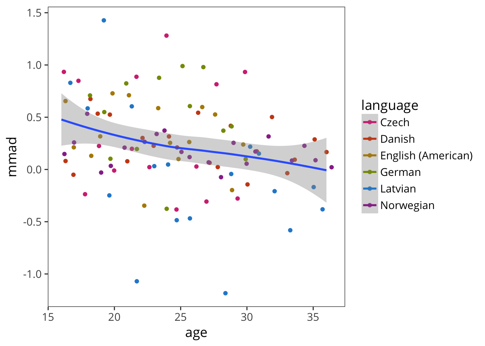
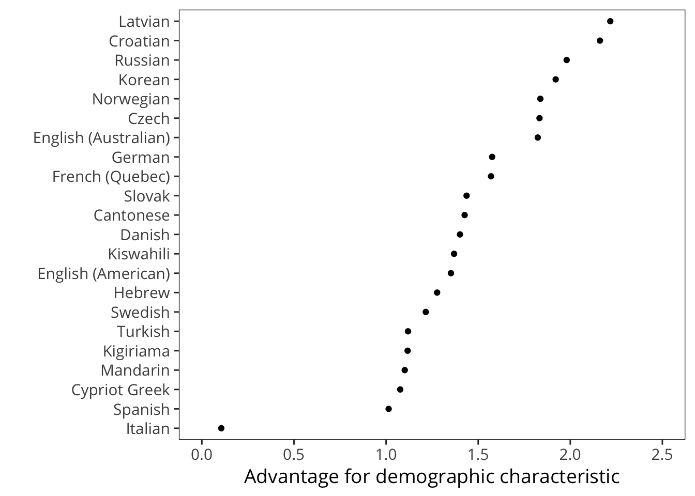
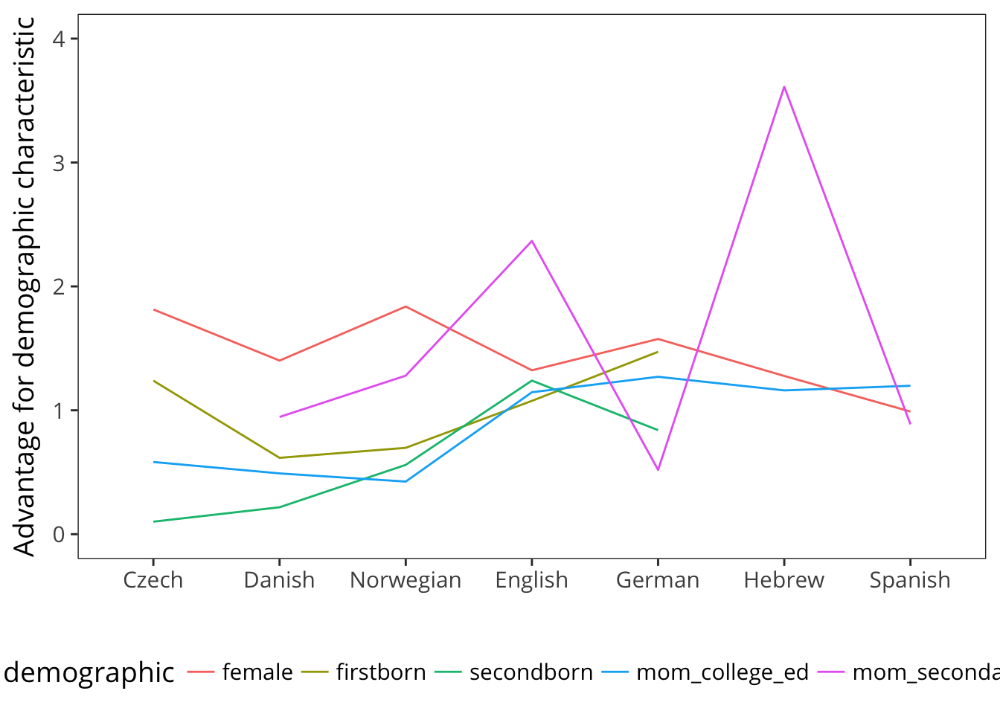

4 Demographic Variables
We examine the patterns of vocabulary growth for individual demographic variables. We compare the effects of gender (female advantage), birth order (first-born advantage), and maternal education (socioeconomic status – SES – advantage). We develop a framework for comparing the magnitude of these effects.
4.1 Gender
This analysis examines how vocabulary development differs by children’s reported gender, replicating and extending the results of:
Eriksson, M., Marschik, P. B., Tulviste, T., Almgren, M., Pérez Pereira, M., Wehberg, S., … Gallego, C. (2012). Differences between girls and boys in emerging language skills: Evidence from 10 language communities. British Journal of Developmental Psychology 30, 326–343.
An earlier version of this analysis was reported in Frank et al. (2016).
Plot vocabulary size over age by gender.

We quantify the gap between boys and girls in effect size. Normally we’d use something like Cohen’s \(d\) here, where
\[d = \frac{\mu_2 - \mu_1}{SD_{pooled}}\]
But as in the previous chapter, we have the problem of non-normal distributions. To circumvent this, we use a non-parametric measure derived from the same components. It’s going to be the difference between medians, divided by the MAD. (We call this the MMAD).
The MMAD for gender is quite constant across age. 
Visualize variability.

4.2 Maternal education
From health to education, children from lower socioeconomic status (SES) backgrounds tend to be at higher risk for a variety of negative developmental outcomes, compared to their higher-SES peers (Bradley & Corwin, 2002). A large literature documents specific relations between SES and children’s early language abilities, especially oral vocabulary, which is in turn related to outcomes when children begin formal education (e.g., Durham et al., 2007; Hart & Risley, 2006; Hoff, 2002; Marchman & Fernald, 2008). Environmental explanations of these SES effects are often given in terms of indirect factors that affect life opportunities or experiences, such as nutrition and access to health care, as well as more direct factors that impact daily life, such as smoking during pregnancy, access to quality child care, or amount of time caregivers spend in interactions with their young children. Alternatively, even early language shows a significant genetic component, raising the possibility that SES-vocabulary links may instead be genetically mediated (Hayiou-Thomas et al., 2012).
Cross-national comparisons may shed light on the factors that lead to relations between SES and children’s vocabulary outcomes. On the one hand, relatively constant relations across language communities that vary widely in indirect and direct factors that shape learning would provide prima facie support for genetic explanations. In contrast, a greater degree of cross-national variability would point to the origins of SES effects in aspects of children’s early environments that vary with SES to differing degrees across countries (e.g., Siddiqi et al., 2007; L. C. H. Fernald et al., 2012). Our current study addresses this issue in very young children using data from the MacArthur-Bates Communicative Development Inventories (MB-CDI), a family of reliable and valid parent-report instruments for measuring early vocabulary development in children under 3 years (Fenson et al., 2007). We take advantage of Wordbank, a new database of more than 10,000 MB-CDI instruments from six countries (Frank et al., 2016). We use maternal education as a proxy for SES, following previous work suggesting that maternal education is strongly related to SES variation (Bornstein et al., 2003; Hoff, 2002).
We use maternal education as a proxy for socio-economic status.


Visualize variability.

Our findings show that the relations between maternal education and children’s vocabulary outcomes is highly variable across countries. The observational nature of our data precludes strong inferences about the precise factors that lead to these differences, though speculation is certainly possible. The large magnitude of the differences across countries suggests a powerful role for environmental factors in shaping variation in child outcomes even before the age of 3 years. Findings from the present study support the proposal that inequalities in factors that are linked to child well being should be addressed early in life. Since features of the quantity and quality of caregiver linguistic input has been strongly implicated in early language development, future research should focus on policy interventions that facilitate children’s access to high quality talk by caregivers, including care availability and parental leave.
4.3 Birth order
Only 8 languages have birth order data, and only 7 languages have it for WS.


Visualize variability.

Synthesize
4.4 ABC method
Another way to get effect sizes is to integrate the area between curves.
The units for this analysis are arbitrary and (right now) can’t be compared across languages, since the curves have different lengths. To overcome this limitation, we’d need to look at
First look at gender advantage.

From this perspective it is quite clear that the Italian effect is anomalous. FIXME: what do we say about this?
Visualizing demographic advantages against one another.

4.5 Are languages truly different, controlling for demographics
We observed that the mena